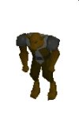

Rellekka (Members)
Introduction | Location | Points of Interest | Personalities
Quests | Dangers of the North | Miscellaneous
Quests | Dangers of the North | Miscellaneous
Introduction

Many people consider the Fremennik to be a foolish or stupid people, but nothing could be further from the truth. The Fremennik are resourceful and clever, and, if you want to join the clan, be prepared to face the full extent of their cunning.
Location

To the south and south-east are Sinclair Mansion, the Seers' Village and Camelot, small settlements that Fremennik warriors could, should they choose, easily pillage.
Off the coast of Rellekka are the islands of Miscellania, Etceteria and Waterbirth Island.
Points of Interest

Upon gaining the right to walk among them, though, an adventurer will gain access to prime Fishing spots, excellent arms and armour, Yrsa's clothes and shoes, and, of course, the finest beer in RuneScape in the largest quantities.
Personalities

Brundt is both leader of the Fremennik tribe and a powerful warrior. He has led his tribe through harsh winters and, more recently, in expeditions against the dagger-mouths beneath Waterbirth Island.
|

Olaf spends much of his time travelling the outer lands and singing the glories of his people to confused foreigners. When at home he sings to people that know the stories and can very probably sing along (mostly to avoid listening to his voice).
|
|
| Brundt can be found enjoying himself in the Long Hall. | Olaf can be found east of the Long Hall. |

Sigli is a hunter beyond compare in the Fremennik clan. He has hunted the most dangerous beasts, including the deadly, possibly mythical, Draugen.
|

Many years ago, Manni was among the greatest warriors the Fremennik could call upon. By surviving hundreds of battles he has earned the right to spend the rest of his life revelling in the Long Hall. Speaking to him proves that he has not been wasting his time there.
|
|
| Sigli can be found preparing himself for his next hunt just south of the Long Hall. | Manni can be found enjoying himself a bit too much in the Long Hall. |

Thorvald is the greatest fighter the people of Rellekka can now call upon, and it is a bold or stupid opponent that dares test his skills. Despite his obvious power, Thorvald is a friendly man and extremely sporting.
|

Sigmund is a canny salesman, and has sold his wares to the people of Rellekka for many years. Unlike the infamous Ali Morrisane, though, he does not appear greedy to spread himself (or people acting on his behalf) across the surface of RuneScape.
|
|
| Thorvald can be found in a hut north of the Long Hall. | Sigmund can be found in the market west of the Long Hall. |

As old as he is, and as bad as the Fremennik reputation may be, Peer is still a cunning man, and delights in constructing puzzles of dizzying complexity, layered over each other. If there is a proof of the Fremennik's intelligence, Peer is it.
|

Swensen is a powerful man in Rellekka, for without his maps and charts the Fremennik warriors would be unable to conduct their raids or their hunts, and their fish supplies would quickly dry up. He is interested in mazes and might offer you the opportunity to try out his own private one.
|
|
| Peer stands outside his house south of the market. | Swensen stays in his house south of the market. |

Askeladden is a young Fremennik, and currently going through the trials that will make him a fully-fledged Fremennik. He is mischievous and cunning, but good to get information from.
|

Thora once travelled RuneScape perfecting her art and serving drinks to heroes and drunkards (and drunk heroes, of course). Now she has returned to Rellekka, where she works in the Long Hall. Thora and Askeladden have a constant battle, as he tries to sneak in and drink, and she tries to keep him out.
|
|
| Askeladden can be found south of the Long Hall, trying to sneak inside. | Thora can be found serving the revellers in the Long Hall. |

Not all Fremennik care to spend their time in the Long Hall, and some leave their towns and settlements to sail upon the high seas, choosing the life of the wholesale plunder merchant. Lokar is one of these, and has travelled far in his many years at sea... even to the enigmatic home of the Moon Clan.
|
| Lokar can be found on the docks. |
Quests
The following quest can be started in Rellekka:
- The Fremennik Trials (Members)
- Lunar Diplomacy (Members)
- The Fremennik Isles (Members)
- Glorious Memories (Members)
Dangers of the North

Rock crabs are peculiar beasts, due to their remarkable camouflage. It is almost impossible to distinguish a rock crab from a normal rock until you wander too close and it reveals itself by trying to nip off a piece of your flesh for dinner.
|

If unicorns are rare, black unicorns must be considered especially rare. The black unicorn foal is a cute little creature, but undeniably evil.
|
|
| Rock crabs can be found north of town. | Black unicorns can be found east of Rellekka, wandering in the woods. |

The black unicorn near Rellekka is a masterpiece of evil. It cares for nothing but itself and its foals and will use its horn gladly. Luckily, most adventurers who journey to Rellekka should be capable of dealing with it.
|

Hobgoblins are found in most areas of RuneScape. They are basically a tougher version of goblins, generally using spears to attack.
|
|
| The black unicorn can be found in the woods east of Rellekka. | There are only a few hobgoblins near Rellekka, usually grouping in the north beyond the rock crabs. |

The Fremennik warriors are excellent fighters and, with Fremennik weapons and armour, they don't have many weaknesses. If you're new to Rellekka, it might be best to leave them alone for a while.
|
| Warriors can be found throughout Rellekka, market guards can be found in the market. |
Miscellaneous
- Sailors on the docks in the north of town will take you to Miscellania and Etceteria, and Waterbirth Island
- There is a bucket of milk in a hut in the east of town.
- The mine in the north of town has silver, coal and clay.
- There is a bronze hatchet spawn point near the hobgoblins north of the town.

|
More articles in Cities and Towns
|
|